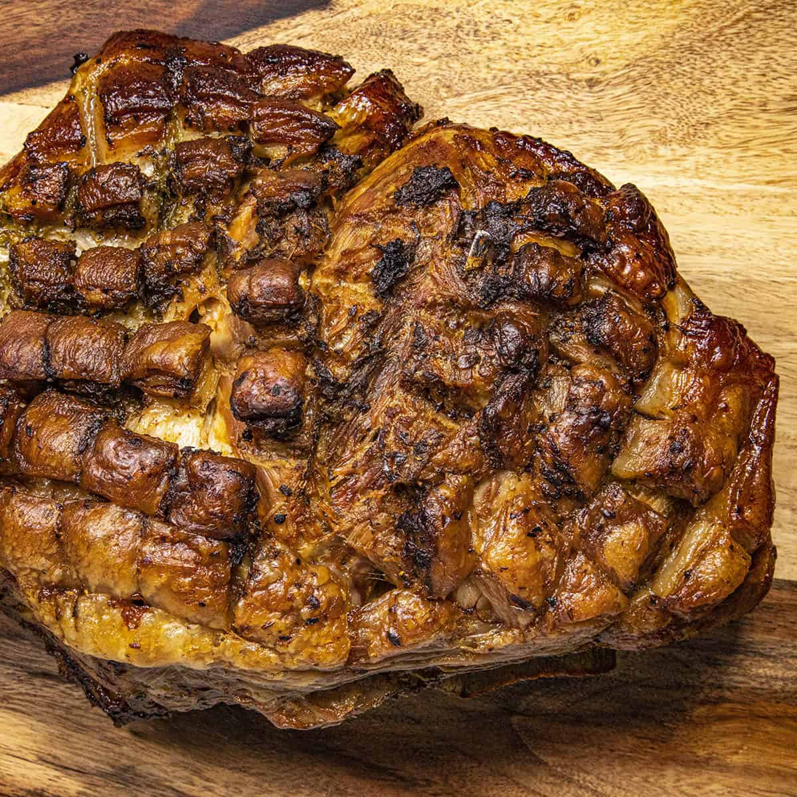

Delicious Pork Shoulder
Fantastic Pernil
Juicy, fatty pork shoulder!

Pernil, the perfect meal for a pugilist
A meal my mom would make for the holidays and my birthday,
this is perfect for marking a special occasion.
Ingredients
- 7lbs of pork shoulder
- Garlic, oregano, salt
- Love
- Trader Joe's Pernil Mix
- Lot more love
- Cilantro
- Your fave oil
Steps
- Rub all that garlic, oregano, salt, love, TJ's pernil mix,
cilantro and oil on the pork shoulder
- Set oven to 400 degrees (fahrenheit of course)
- Place all the meat mixin on the lasagna sheets, over a pan
- Cover the pan, throw it in the oven
- Eyeball the lasanga until it's done, serve when it pleases you
Back to home